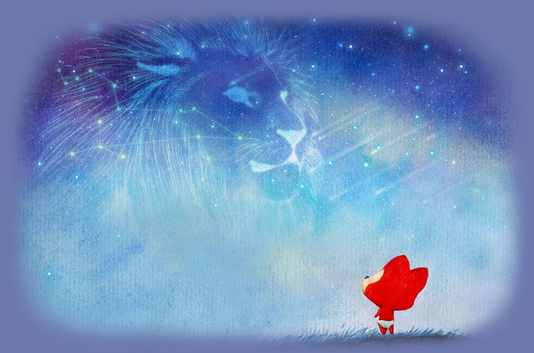

过去的阿狸一直是一个人生活，享受着孤独，也憧憬着爱情。

一个人的长廊

一个人的山岗

一个人的地铁

一个人的游乐场

但他依然乐观，微笑着，等待着

生活难免有风风雨雨

他总是能够轻松的应对

并且面带阳光、自信的笑容

生活也不会总是一帆风顺

但他每次都能勇敢的面对
随时准备接受生活的挑战


可是阿狸的爱情又在哪里呢？
在镜子里面吗？他不敢相信

他去问大树，我的爱情在哪里？
大树告诉他，也许就在不远的地方

于是，阿狸一个人继续向前走
走在茫茫的雪地上

直到有一天阿狸与桃子相遇了

阿狸喜欢桃子，因为桃子的出现，阿狸脸上有了更加灿烂的笑容

可是桃子会喜欢阿狸吗？


终于有一天，阿狸鼓起了勇气

阿狸好高兴
每天阿狸都会去找桃子

然后两个人一起出去玩

晚上阿狸会把桃子送回家

直到很晚
阿狸才会一个人回家

然后高兴地进入梦乡，希望梦到桃子

阿狸很快就成为了桃子的逛街助手

阿狸和桃子一起去了好多地方玩

阿狸也和桃子一样成为了一个吃货

后来，他们搬到了一起

于是阿狸开始学习新的技能

煮饭

每天早上，他们吃着自己做的美食

然后在同一个站台，高高兴兴的一起上班
阿狸感觉自己好幸福。
因为自己有了家
那个有桃子在的地方

他们偶尔也会吵架

阿狸不想这样


一定是我有什么做的不对，阿狸在想
如果没有桃子在身边，窗外就没有风景

如果没有桃子在身后


阿狸又怎会飞的更高更远
阿狸不想这样。他要为桃子改变自己
桃子说她喜欢狮子座的人，于是阿狸许下愿望


我愿为你变成狮子座
爱情就像花草一样
需要用包容来浇灌

再到后来，桃子要过生日了
阿狸开始为桃子准备礼物


看着礼物一件件准备好了 阿狸好开心 因为他想象着桃子收到礼物时 开心的样子

想想后面还有一辈子 阿狸好开心 因为可以和桃子 去全世界好多地方玩
阿狸也会继续努力
为了他和桃子的梦之城堡

阿狸很幸福，因为他找到了桃子。他相信后面的每天都会是快乐的
简简单单，体会着与桃子在一起的每一个刻

后来的一天，桃子说她不敢坐山车了，于是阿狸就带她到别的地方玩。这只是他们幸福生活中的一件小事，小到无法引起别人的注意。可这是属于阿狸和桃子的幸福生活。


桃子：永远有多远？
阿狸：比时间多一秒就是永远，我会永远爱你
桃子：世界有多大？
阿狸：你走到哪里，世界就有多大
愿得一人心，白首不相离


I love you

阿狸和桃子的故事会一直继续下去。
无论精彩、平淡都会是他们喜欢的。
-- 按“Esc"键有惊喜